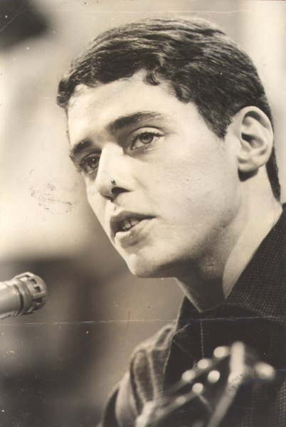

MPB - Música Popular Brasileira =)
Este aqui em cima é o grande Chico Buarque, uma das caras mais famosas da Música Popular Brasileira, mais conhecida como MPB. A MPB surgiu no contexto da ditadura militar brasileira, sendo uma ramificação da Bossa Nova. O que fizeram na MPB foi pegar elementos clássicos da Bossa Nova e adaptá-los à nova realidade. Então, junto com as letras críticas, porém abstratas, com uma pegada maior de Samba e outros movimentos.
Favoritos:
Elis Regina
- - Uma das maiores cantoras de sua época. Praticamente estreou o gênero MPB em um programa de televisão, interpretando a música "Arrastão". Entre todas as suas músicas, destaco "Como nossos pais", "O bêbado e a equilibrista" e "Tiro ao Álvaro" como minhas favoritas. Elis tinha músicas próprias, mas ficou mais conhecida por suas interpretações muito fortes e expressivas. Elis Regina morreu com apenas 36 anos, no auge de sua carreira, por parada cardíaca.
João Gilberto
- - João Gilberto não é conhecido pela MPB, mas merece uma menção aqui. João Gilberto é considerado o pai da Bossa Nova, que lembrando, foi o gênero inspirador da MPB. E você, com certeza já ouviu alguma composição dele. Por exemplo, "Garota de Ipanema", "Chega de Saudade", "Aquarela do Brasil" são todos grandes clássicos desse cara, que foi um gênio em composições no violão. João Gilberto morreu com seus 88 anos, em 2019.

Tom Jobim
- - Tom Jobim, assim como João Gilberto, não é da MPB, mas também merece sua menção aqui pela Bossa Nova. Esse é outro gênio da Bossa, que, inclusive, tem músicas com participações de outros citados a cima, como a própria Elis Regina em "Águas de Março". "Wave", "Samba de uma nota só" são outros grandes sucessos de Tom Jobim, que veio a falecer em 1994.
Tim Maia
- - Esse aqui é muito conhecido, e é da MPB. O grande Tim Maia, com suas músicas cheias de ritmo e grooves característicos e marcantes, além do seu jogo de metais nas músicas. "Descobridor dos Sete Mares", "Gostava tanto de você" e "Me dê motivos" são grandes sucessos de Tim Maia. Infelizmente, Tim Maia faleceu cedo, no ano de 1998, deixando toda a sua carreira.
Chico Buarque
- - E vamos ao citado desde o início nesse texto. Talvez seja o mais famoso, já que ele é um dos que ainda continua vivo e ainda continua produzindo. Seu último lançamento foi em 2017 com o álbum "Caravanas", mas ele marcou a história com vários "hits", como "João e Maria", "Contrução" (que, abrindo um parênteses aqui, é uma música terrivelmente incrível), e também "Geni e o Zepelim".
